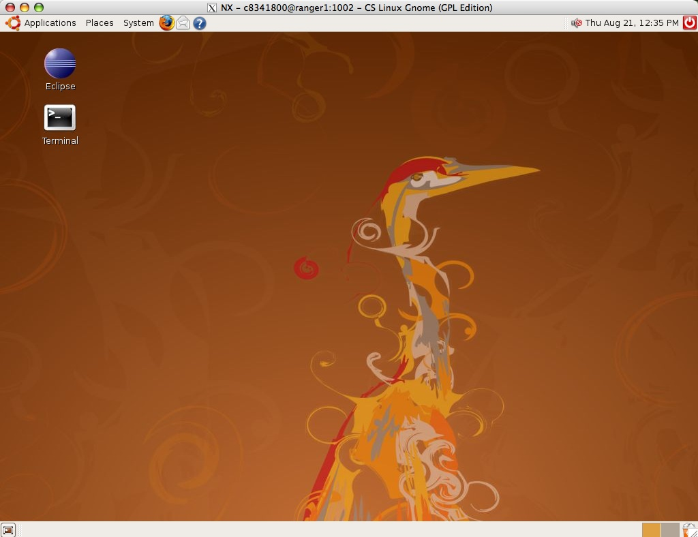

Customizing Your Account
Logging
On to the Server
The computer system
you will use for CSCI 2170 is a Linux system. Its name is ranger. Ranger runs
the Linux operating system, an extremely powerful and popular system. It is
not our goal to teach you everything about Linux in this course. However, you
will learn enough to do your work in C++ including how to create/edit, print,
list, copy, compile, delete, and execute (run) files. Today, you will learn
how to log on to ranger and you will customize your account for future labs.
Read
the following section completely and then do Exercise 1.
To connect to ranger from a PC in the computer lab, double-click the mouse
on the CS Linux Gnome icon which looks like this:
(This one is NOT active.)
Make sure the icon has the label CS Linux Gnome. When you double-click
on the icon, you should see a new window such as the following open on the desk top.
 In the window displayed and in the Login text box,
type your class account number provided by your instructor, example c8341803.
In the Password text box, enter your password provided by your instructor, example ab2w45.
You password will echo as a row such as "******". So be careful in your typing.
It will be invisible as you type it. If you make an error,
you will be asked to start over by checking the Login account number and re-entering the
password information. If your configuration also requests the host, enter ranger.cs.mtsu.edu.
After filling in the requested information, click the Login button and after a few seconds,
a larger window should appear (as shown below). If your new window is just a command
window (white with a prompt, then most likely you selected the wrong icon
above, i.e., it was not labeled CS Linux Gnome.
If you are unsuccessful
after several attempts, check to be sure the Caps Lock key is not locked
on the keyboard. If it is, unlock it and try again. Otherwise, ask the lab
assistant for help.
If you are successfully logged on, you will be greeted by the a window such as the following.
It may take a few seconds for this window to appear and your window may temporarily be dark
before finally displaying.
This larger brownish window shows that your PC is properly connected to the ranger system.
If you cannot get this larger window to appear, then ask a lab assistant for help.
In the window displayed and in the Login text box,
type your class account number provided by your instructor, example c8341803.
In the Password text box, enter your password provided by your instructor, example ab2w45.
You password will echo as a row such as "******". So be careful in your typing.
It will be invisible as you type it. If you make an error,
you will be asked to start over by checking the Login account number and re-entering the
password information. If your configuration also requests the host, enter ranger.cs.mtsu.edu.
After filling in the requested information, click the Login button and after a few seconds,
a larger window should appear (as shown below). If your new window is just a command
window (white with a prompt, then most likely you selected the wrong icon
above, i.e., it was not labeled CS Linux Gnome.
If you are unsuccessful
after several attempts, check to be sure the Caps Lock key is not locked
on the keyboard. If it is, unlock it and try again. Otherwise, ask the lab
assistant for help.
If you are successfully logged on, you will be greeted by the a window such as the following.
It may take a few seconds for this window to appear and your window may temporarily be dark
before finally displaying.
This larger brownish window shows that your PC is properly connected to the ranger system.
If you cannot get this larger window to appear, then ask a lab assistant for help.

Now, there is one more step to the login process. In the larger window there is an icon in the
upper left labeled gnome-terminal. Click on this icon. A new command window should
now appear with a system prompt (this will not always be your prompt)
ranger2$
which
means you can enter UNIX commands. Happy UNIXing!
Finally, once you have successfully logged into the ranger system and completed your
work (as described below), you will need to log out of the system.
Customizing Your Account
Next,
you should customize your account. The Computer Science
department has created software which will customize your account so that
it is easier to use and will allow your teacher to interact with you more
easily. The following customization should only be done once.
You will never have to customize this account again.
Don't type anything until you understand
what to do and get to Exercise 2. The customization command is as follows:
~cs/customize 2170 cen
Exercise
2:
Make
the Command window active. Drag the windows enough that you can see the example
above.
At the "ranger$"
prompt in the Command window, type
in the customize line exactly as shown above. The customization will ask you
for your first (personal) name and last (family) name. Use mixed-case in entering
your name; for example, enter "John" and not "john" or
"JOHN".
If there are any
errors, please raise your hand for the lab assistant to take a look at it.
Otherwise, log completely out of the ranger system (see the information just prior to Exercise 1)
Log on again as you did before
and
your customization should now be active. If your prompt is of the form:
ranger$
then everything
is OK. If not, please raise your hand for the lab assistant to take a look
at it.
If your customization
was OK, you will no longer be using ranger in this closed lab, so log off of ranger by typing
"exit".
To log out, locate the top window menu bar
with pull down selections for Applications Places System Select the System
tab followed by Quit and proceed to logout. As an alternative, you may use the icon
just below the NX window bar window close (the X).